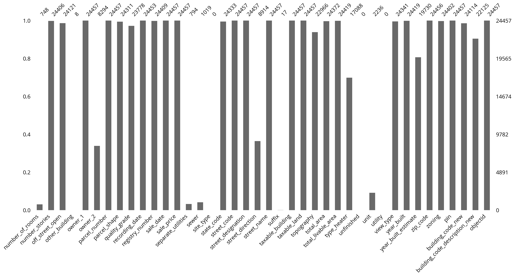

from matplotlib import pyplot as plt
import numpy as np
import pandas as pd
import geopandas as gpd
import hvplot.pandas
np.random.seed(42)Week 12B: Predictive modeling with scikit-learn
pd.options.display.max_columns = 999%matplotlib inline- Nov 27, 2023
- Section 401
The plan for today
- Wrap up our money vs. happiness example
- Introduce decision trees and random forests
- Case study: Modeling housing prices in Philadelphia
Supervised learning with scikit-learn
Example: does money make people happier?
We’ll load data compiled from two data sources: - The Better Life Index from the OECD’s website - GDP per capita from the IMF’s website
# Load the data
data = pd.read_csv("./data/gdp_vs_satisfaction.csv")
data.head()| Country | life_satisfaction | gdp_per_capita | |
|---|---|---|---|
| 0 | Australia | 7.3 | 50961.87 |
| 1 | Austria | 7.1 | 43724.03 |
| 2 | Belgium | 6.9 | 40106.63 |
| 3 | Brazil | 6.4 | 8670.00 |
| 4 | Canada | 7.4 | 43331.96 |
# Linear models
from sklearn.linear_model import LinearRegression
from sklearn.linear_model import Ridge
# Model selection
from sklearn.model_selection import train_test_split
# Pipelines
from sklearn.pipeline import make_pipeline
# Preprocessing
from sklearn.preprocessing import StandardScaler
from sklearn.preprocessing import PolynomialFeaturesFirst step: set up the test/train split of input data:
# Do a 70/30 train/test split
train_set, test_set = train_test_split(data, test_size=0.3, random_state=42)
# Features
X_train = train_set['gdp_per_capita'].values
X_train = X_train[:, np.newaxis]
X_test = test_set['gdp_per_capita'].values
X_test = X_test[:, np.newaxis]
# Labels
y_train = train_set['life_satisfaction'].values
y_test = test_set['life_satisfaction'].valuesWhere we left off: overfitting
As we increase the polynomial degree (add more and more polynomial features) two things happen:
- Training accuracy goes way up
- Test accuracy goes way down
This is the classic case of overfitting — our model does not generalize well at all.
Regularization to the rescue?
- The
Ridgeadds regularization to the linear regression least squares model - Parameter alpha determines the level of regularization
- Larger values of alpha mean stronger regularization — results in a “simpler” bestfit
Remember, regularization penalizes large parameter values and complex fits
Let’s gain some intuition:
- Fix the polynomial degree to 3
- Try out alpha values of 0, 10, 100, and \(10^5\)
- Compare to linear fit (no polynomial features)
Important - Baseline: linear model - This uses LinearModel and scales input features with StandardScaler - Ridge regression: try multiple regularization strength values - Use a pipeline object to apply both a StandardScaler and PolynomialFeatures(degree=3) pre-processing to features
Set up a grid of GDP per capita points to make predictions for:
# The values we want to predict (ranging from our min to max GDP per capita)
gdp_pred = np.linspace(1e3, 1.1e5, 100)
# Sklearn needs the second axis!
X_pred = gdp_pred[:, np.newaxis]# Create a pre-processing pipeline
# This scales and adds polynomial features up to degree = 3
pipe = make_pipeline(StandardScaler(), PolynomialFeatures(degree=3))
# BASELINE: Setup and fit a linear model (with scaled features)
linear = LinearRegression()
scaler = StandardScaler()
linear.fit(scaler.fit_transform(X_train), y_train)
with plt.style.context("fivethirtyeight"):
fig, ax = plt.subplots(figsize=(10, 6))
## Plot the data
ax.scatter(
data["gdp_per_capita"] / 1e5,
data["life_satisfaction"],
label="Data",
s=100,
zorder=10,
color="#666666",
)
## Evaluate the linear fit
print("Linear fit")
training_score = linear.score(scaler.fit_transform(X_train), y_train)
print(f"Training Score = {training_score}")
test_score = linear.score(scaler.fit_transform(X_test), y_test)
print(f"Test Score = {test_score}")
print()
## Plot the linear fit
ax.plot(
X_pred / 1e5,
linear.predict(scaler.fit_transform(X_pred)),
color="k",
label="Linear fit",
)
## Ridge regression: linear model with regularization
# Plot the predicted values for each alpha
for alpha in [0, 10, 100, 1e5]:
print(f"alpha = {alpha}")
# Create out Ridge model with this alpha
ridge = Ridge(alpha=alpha)
# Fit the model on the training set
# NOTE: Use the pipeline that includes polynomial features
ridge.fit(pipe.fit_transform(X_train), y_train)
# Evaluate on the training set
training_score = ridge.score(pipe.fit_transform(X_train), y_train)
print(f"Training Score = {training_score}")
# Evaluate on the test set
test_score = ridge.score(pipe.fit_transform(X_test), y_test)
print(f"Test Score = {test_score}")
# Plot the ridge results
y_pred = ridge.predict(pipe.fit_transform(X_pred))
ax.plot(X_pred / 1e5, y_pred, label=f"alpha = {alpha}")
print()
# Plot formatting
ax.legend(ncol=2, loc=0)
ax.set_ylim(4, 8)
ax.set_xlabel("GDP Per Capita ($\\times$ $10^5$)")
ax.set_ylabel("Life Satisfaction")Linear fit
Training Score = 0.4638100579740343
Test Score = 0.35959585147159556
alpha = 0
Training Score = 0.6458898101593082
Test Score = 0.5597457659851048
alpha = 10
Training Score = 0.5120282691427858
Test Score = 0.38335642103788325
alpha = 100
Training Score = 0.1815398751108913
Test Score = -0.05242399995626967
alpha = 100000.0
Training Score = 0.0020235571180508005
Test Score = -0.26129559971586125
Takeaways
- As we increase alpha, the fits become “simpler” and coefficients get closer and closer to zero — a straight line!
- When alpha = 0 (no regularization), we get the same result as when we ran
LinearRegression()with the polynomial features - In this case, regularization doesn’t improve the fit, and the base polynomial regression (degree=3) provides the best fit
Recap: what we learned so far
- The LinearRegression model
- The test/train split and evaluation
- Feature engineering: scaling and creating polynomial features
- The Ridge model and regularization
- Creating Pipeline() objects
How can we improve?
More feature engineering!
In this case, I’ve done the hard work for you and pulled additional country properties from the OECD’s website.
data2 = pd.read_csv("./data/gdp_vs_satisfaction_more_features.csv")data2.head()| Country | life_satisfaction | GDP per capita | Air pollution | Employment rate | Feeling safe walking alone at night | Homicide rate | Life expectancy | Quality of support network | Voter turnout | Water quality | |
|---|---|---|---|---|---|---|---|---|---|---|---|
| 0 | Australia | 7.3 | 50961.87 | 5.0 | 73.0 | 63.5 | 1.1 | 82.5 | 95.0 | 91.0 | 93.0 |
| 1 | Austria | 7.1 | 43724.03 | 16.0 | 72.0 | 80.6 | 0.5 | 81.7 | 92.0 | 80.0 | 92.0 |
| 2 | Belgium | 6.9 | 40106.63 | 15.0 | 63.0 | 70.1 | 1.0 | 81.5 | 91.0 | 89.0 | 84.0 |
| 3 | Brazil | 6.4 | 8670.00 | 10.0 | 61.0 | 35.6 | 26.7 | 74.8 | 90.0 | 79.0 | 73.0 |
| 4 | Canada | 7.4 | 43331.96 | 7.0 | 73.0 | 82.2 | 1.3 | 81.9 | 93.0 | 68.0 | 91.0 |
Decision trees: a more sophisticated modeling algorithm
We’ll move beyond simple linear regression and see if we can get a better fit.
A decision tree learns decision rules from the input features:
A decision tree classifier for the Iris data set
Regression with decision trees is similar
For a specific corner of the input feature space, the decision tree predicts an output target value

Decision trees suffer from overfitting
Decision trees can be very deep with many nodes — this will lead to overfitting your dataset!
Random forests: an ensemble solution to overfitting
- Introduces randomization into the fitting process to avoid overfitting
- Fits multiple decision trees on random subsets of the input data
- Avoids overfitting and leads to better overall fits
This is an example of ensemble learning: combining multiple estimators to achieve better overall accuracy than any one model could achieve
from sklearn.ensemble import RandomForestRegressorLet’s split our data into training and test sets again:
# Split the data 70/30
train_set, test_set = train_test_split(data2, test_size=0.3, random_state=42)
# the target labels
y_train = train_set["life_satisfaction"].values
y_test = test_set["life_satisfaction"].values
# The features
feature_cols = [col for col in data2.columns if col not in ["life_satisfaction", "Country"]]
X_train = train_set[feature_cols].values
X_test = test_set[feature_cols].valuesfeature_cols['GDP per capita',
'Air pollution',
'Employment rate',
'Feeling safe walking alone at night',
'Homicide rate',
'Life expectancy',
'Quality of support network',
'Voter turnout',
'Water quality']Let’s check for correlations in our input data
- Highly correlated input variables can skew the model fits and lead to worse accuracy
- Best to remove features with high correlations (rule of thumb: coefficients > 0.7 or 0.8, typically)
import seaborn as snssns.heatmap(
train_set[feature_cols].corr(),
cmap="coolwarm",
annot=True,
vmin=-1,
vmax=1
);Let’s do some fitting…
New: Pipelines support models as the last step!
- Very useful for setting up reproducible machine learning analyses!
- The
Pipelinebehaves just like a model, but it runs the transformations beforehand - Simplifies the analysis: now we can just call the
.fit()function of the pipeline instead of the model
Establish a baseline with a linear model:
# Linear model pipeline with two steps
linear_pipe = make_pipeline(StandardScaler(), LinearRegression())
# Fit the pipeline
# NEW: This applies all of the transformations, and then fits the model
print("Linear regression")
linear_pipe.fit(X_train, y_train)
# NEW: Print the training score
training_score = linear_pipe.score(X_train, y_train)
print(f"Training Score = {training_score}")
# NEW: Print the test score
test_score = linear_pipe.score(X_test, y_test)
print(f"Test Score = {test_score}")Linear regression
Training Score = 0.755333265746168
Test Score = 0.6478865590446827Now fit a random forest:
# Random forest model pipeline with two steps
forest_pipe = make_pipeline(
StandardScaler(), # Pre-process step
RandomForestRegressor(n_estimators=100, max_depth=2, random_state=42), # Model step
)
# Fit a random forest
print("Random forest")
forest_pipe.fit(X_train, y_train)
# Print the training score
training_score = forest_pipe.score(X_train, y_train)
print(f"Training Score = {training_score}")
# Print the test score
test_score = forest_pipe.score(X_test, y_test)
print(f"Test Score = {test_score}")Random forest
Training Score = 0.8460206265596556
Test Score = 0.8633845691443998Which variables matter the most?
Because random forests are an ensemble method with multiple estimators, the algorithm can learn which features help improve the fit the most.
- The feature importances are stored as the
feature_importances_attribute - Only available after calling
fit()!
# What are the named steps?
forest_pipe.named_steps{'standardscaler': StandardScaler(),
'randomforestregressor': RandomForestRegressor(max_depth=2, random_state=42)}# Get the forest model
forest_model = forest_pipe['randomforestregressor']forest_model.feature_importances_array([0.67746013, 0.00475431, 0.13108609, 0.06579352, 0.00985913,
0.01767323, 0.02546804, 0.00601776, 0.06188779])# Make the dataframe
importance = pd.DataFrame(
{"Feature": feature_cols, "Importance": forest_model.feature_importances_}
).sort_values("Importance", ascending=False)importance| Feature | Importance | |
|---|---|---|
| 0 | GDP per capita | 0.677460 |
| 2 | Employment rate | 0.131086 |
| 3 | Feeling safe walking alone at night | 0.065794 |
| 8 | Water quality | 0.061888 |
| 6 | Quality of support network | 0.025468 |
| 5 | Life expectancy | 0.017673 |
| 4 | Homicide rate | 0.009859 |
| 7 | Voter turnout | 0.006018 |
| 1 | Air pollution | 0.004754 |
# Plot
importance.sort_values("Importance", ascending=True).hvplot.barh(
x="Feature", y="Importance", title="Does Money Make You Happier?"
)Let’s improve our fitting with k-fold cross validation
- Break the data into a training set and test set
- Split the training set into k subsets (or folds), holding out one subset as the test set
- Run the learning algorithm on each combination of subsets, using the average of all of the runs to find the best fitting model parameters
For more information, see the scikit-learn docs

The cross_val_score() function will automatically partition the training set into k folds, fit the model to the subset, and return the scores for each partition.
It takes a Pipeline object, the training features, and the training labels as arguments
from sklearn.model_selection import cross_val_scoreLet’s do 3-fold cross validation
Linear pipeline (baseline)
model = linear_pipe['linearregression']# Make a linear pipeline
linear_pipe = make_pipeline(StandardScaler(), LinearRegression())
# Run the 3-fold cross validation
scores = cross_val_score(
linear_pipe,
X_train,
y_train,
cv=3,
)
# Report
print("R^2 scores = ", scores)
print("Scores mean = ", scores.mean())
print("Score std dev = ", scores.std())R^2 scores = [ 0.02064625 -0.84773581 -0.53652985]
Scores mean = -0.4545398042994617
Score std dev = 0.35922474493059153Random forest model
# Make a random forest pipeline
forest_pipe = make_pipeline(
StandardScaler(), RandomForestRegressor(n_estimators=100, random_state=42)
)
# Run the 3-fold cross validation
scores = cross_val_score(
forest_pipe,
X_train,
y_train,
cv=3,
)
# Report
print("R^2 scores = ", scores)
print("Scores mean = ", scores.mean())
print("Score std dev = ", scores.std())R^2 scores = [0.5208505 0.78257711 0.66646144]
Scores mean = 0.6566296832385494
Score std dev = 0.1070753730357217Takeaway: the random forest model is clearly more accurate
Question: Why did I choose to use 100 estimators in the RF model?
- In this case, I didn’t have a good reason
n_estimatorsis a model hyperparameter- In practice, it’s best to optimize the hyperparameters and the model parameters
(via the fit() method)
This is when cross validation becomes very important
- Optimizing hyperparameters with a single train/test split means you are really optimizing based on your test set.
- If you use cross validation, a final test set will always be held in reserve to do a final evaluation.
Enter GridSearchCV
A utility function that will: - Iterate over a grid of hyperparameters - Perform k-fold cross validation - Return the parameter combination with the best overall score
from sklearn.model_selection import GridSearchCVLet’s do a search over the n_estimators parameter and the max_depth parameter:
# Create our regression pipeline
pipe = make_pipeline(StandardScaler(), RandomForestRegressor(random_state=42))
pipePipeline(steps=[('standardscaler', StandardScaler()),
('randomforestregressor',
RandomForestRegressor(random_state=42))])In a Jupyter environment, please rerun this cell to show the HTML representation or trust the notebook. On GitHub, the HTML representation is unable to render, please try loading this page with nbviewer.org.
Pipeline(steps=[('standardscaler', StandardScaler()),
('randomforestregressor',
RandomForestRegressor(random_state=42))])StandardScaler()
RandomForestRegressor(random_state=42)
Make the grid of parameters to search
- NOTE: you must prepend the name of the pipeline step
- The syntax for parameter names is: “[step name]__[parameter name]”
pipe.named_steps{'standardscaler': StandardScaler(),
'randomforestregressor': RandomForestRegressor(random_state=42)}model_step = "randomforestregressor"
param_grid = {
f"{model_step}__n_estimators": [5, 10, 15, 20, 30, 50, 100, 200],
f"{model_step}__max_depth": [2, 5, 7, 9, 13, 21, 33, 51],
}
param_grid{'randomforestregressor__n_estimators': [5, 10, 15, 20, 30, 50, 100, 200],
'randomforestregressor__max_depth': [2, 5, 7, 9, 13, 21, 33, 51]}# Create the grid and use 3-fold CV
grid = GridSearchCV(pipe, param_grid, cv=3, verbose=1)
# Run the search
grid.fit(X_train, y_train)Fitting 3 folds for each of 64 candidates, totalling 192 fitsGridSearchCV(cv=3,
estimator=Pipeline(steps=[('standardscaler', StandardScaler()),
('randomforestregressor',
RandomForestRegressor(random_state=42))]),
param_grid={'randomforestregressor__max_depth': [2, 5, 7, 9, 13,
21, 33, 51],
'randomforestregressor__n_estimators': [5, 10, 15, 20,
30, 50, 100,
200]},
verbose=1)In a Jupyter environment, please rerun this cell to show the HTML representation or trust the notebook. On GitHub, the HTML representation is unable to render, please try loading this page with nbviewer.org.
GridSearchCV(cv=3,
estimator=Pipeline(steps=[('standardscaler', StandardScaler()),
('randomforestregressor',
RandomForestRegressor(random_state=42))]),
param_grid={'randomforestregressor__max_depth': [2, 5, 7, 9, 13,
21, 33, 51],
'randomforestregressor__n_estimators': [5, 10, 15, 20,
30, 50, 100,
200]},
verbose=1)Pipeline(steps=[('standardscaler', StandardScaler()),
('randomforestregressor',
RandomForestRegressor(random_state=42))])StandardScaler()
RandomForestRegressor(random_state=42)
# The best estimator
grid.best_estimator_Pipeline(steps=[('standardscaler', StandardScaler()),
('randomforestregressor',
RandomForestRegressor(max_depth=7, random_state=42))])In a Jupyter environment, please rerun this cell to show the HTML representation or trust the notebook. On GitHub, the HTML representation is unable to render, please try loading this page with nbviewer.org.
Pipeline(steps=[('standardscaler', StandardScaler()),
('randomforestregressor',
RandomForestRegressor(max_depth=7, random_state=42))])StandardScaler()
RandomForestRegressor(max_depth=7, random_state=42)
# The best hyper parameters
grid.best_params_{'randomforestregressor__max_depth': 7,
'randomforestregressor__n_estimators': 100}Now let’s evaluate!
We’ll define a helper utility function to calculate the accuracy in terms of the mean absolute percent error
def evaluate_mape(model, X_test, y_test):
"""
Given a model and test features/targets, print out the
mean absolute error and accuracy
"""
# Make the predictions
predictions = model.predict(X_test)
# Absolute error
errors = abs(predictions - y_test)
avg_error = np.mean(errors)
# Mean absolute percentage error
mape = 100 * np.mean(errors / y_test)
# Accuracy
accuracy = 100 - mape
print("Model Performance")
print(f"Average Absolute Error: {avg_error:0.4f}")
print(f"Accuracy = {accuracy:0.2f}%.")
return accuracyLinear model results
# Setup the pipeline
linear = make_pipeline(StandardScaler(), LinearRegression())
# Fit on train set
linear.fit(X_train, y_train)
# Evaluate on test set
evaluate_mape(linear, X_test, y_test)Model Performance
Average Absolute Error: 0.3281
Accuracy = 94.93%.94.92864894582036Random forest results with default parameters
# Initialize the pipeline
base_model = make_pipeline(StandardScaler(), RandomForestRegressor(random_state=42))
# Fit the training set
base_model.fit(X_train, y_train)
# Evaluate on the test set
base_accuracy = evaluate_mape(base_model, X_test, y_test)Model Performance
Average Absolute Error: 0.2322
Accuracy = 96.43%.The random forest model with the optimal hyperparameters
Small improvement!
grid.best_estimator_Pipeline(steps=[('standardscaler', StandardScaler()),
('randomforestregressor',
RandomForestRegressor(max_depth=7, random_state=42))])In a Jupyter environment, please rerun this cell to show the HTML representation or trust the notebook. On GitHub, the HTML representation is unable to render, please try loading this page with nbviewer.org.
Pipeline(steps=[('standardscaler', StandardScaler()),
('randomforestregressor',
RandomForestRegressor(max_depth=7, random_state=42))])StandardScaler()
RandomForestRegressor(max_depth=7, random_state=42)
# Evaluate the best random forest model
best_random = grid.best_estimator_
random_accuracy = evaluate_mape(best_random, X_test, y_test)
# What's the improvement?
improvement = 100 * (random_accuracy - base_accuracy) / base_accuracy
print(f'Improvement of {improvement:0.4f}%.')Model Performance
Average Absolute Error: 0.2320
Accuracy = 96.43%.
Improvement of 0.0011%.Recap
- Decision trees and random forests
- Cross validation with
cross_val_score - Optimizing hyperparameters with
GridSearchCV - Feature importances from random forests
Part 2: Modeling residential sales in Philadelphia
In this part, we’ll use a random forest model and housing data from the Office of Property Assessment to predict residential sale prices in Philadelphia
Machine learning models are increasingly common in the real estate industry
The hedonic approach to housing prices
- An econometric approach
- Deconstruct housing price to the value of each of its parts
- Captures the “price premium” consumers are willing to pay for an extra bedroom or garage
What contributes to the price of a house?
- Property characteristics, e.g, size of the lot and the number of bedrooms
- Neighborhood features based on amenities or disamenities, e.g., access to transit or exposure to crime
- Spatial component that captures the tendency of housing prices to depend on the prices of neighboring homes
Note: We’ll focus on the first two components in this analysis
Why are these kinds of models important?
- They are used widely by cities to perform property assessment valuation
- Train a model on recent residential sales
- Apply the model to the entire residential housing stock to produce assessments
- Biases in the algorithmic models have important consequences for city residents
Too often, these models perpetuate inequality: low-value homes are over-assessed and high-value homes are under-assessed
Philadelphia’s assessments are…not good
Data from the Office of Property Assessment
Let’s download data for properties in Philadelphia that had their last sale during 2022 (the last full calendar year)
Sources: - OpenDataPhilly - Metadata
import requests# the CARTO API url
carto_url = "https://phl.carto.com/api/v2/sql"
# Only pull 2022 sales for single family residential properties
where = "sale_date >= '2022-01-01' and sale_date <= '2022-12-31'"
where = where + " and category_code_description IN ('SINGLE FAMILY', 'Single Family')"# Create the query
query = f"SELECT * FROM opa_properties_public WHERE {where}"
# Make the request
params = {"q": query, "format": "geojson", "where": where}
response = requests.get(carto_url, params=params)
# Make the GeoDataFrame
salesRaw = gpd.GeoDataFrame.from_features(response.json(), crs="EPSG:4326")salesRaw.head()| geometry | cartodb_id | assessment_date | basements | beginning_point | book_and_page | building_code | building_code_description | category_code | category_code_description | census_tract | central_air | cross_reference | date_exterior_condition | depth | exempt_building | exempt_land | exterior_condition | fireplaces | frontage | fuel | garage_spaces | garage_type | general_construction | geographic_ward | homestead_exemption | house_extension | house_number | interior_condition | location | mailing_address_1 | mailing_address_2 | mailing_care_of | mailing_city_state | mailing_street | mailing_zip | market_value | market_value_date | number_of_bathrooms | number_of_bedrooms | number_of_rooms | number_stories | off_street_open | other_building | owner_1 | owner_2 | parcel_number | parcel_shape | quality_grade | recording_date | registry_number | sale_date | sale_price | separate_utilities | sewer | site_type | state_code | street_code | street_designation | street_direction | street_name | suffix | taxable_building | taxable_land | topography | total_area | total_livable_area | type_heater | unfinished | unit | utility | view_type | year_built | year_built_estimate | zip_code | zoning | pin | building_code_new | building_code_description_new | objectid | |
|---|---|---|---|---|---|---|---|---|---|---|---|---|---|---|---|---|---|---|---|---|---|---|---|---|---|---|---|---|---|---|---|---|---|---|---|---|---|---|---|---|---|---|---|---|---|---|---|---|---|---|---|---|---|---|---|---|---|---|---|---|---|---|---|---|---|---|---|---|---|---|---|---|---|---|---|---|---|---|---|---|
| 0 | POINT (-75.14337 40.00957) | 1077 | 2022-05-24T00:00:00Z | D | 415' N OF ERIE AVE | 54230032 | O30 | ROW 2 STY MASONRY | 1 | SINGLE FAMILY | 198 | N | None | None | 45.0 | 0.0 | 0.0 | 4 | 0.0 | 16.0 | None | 0.0 | None | A | 43 | 0 | None | 3753 | 4 | 3753 N DELHI ST | None | None | None | DELRAY BEACH FL | 4899 NW 6TH STREET | 33445 | 73800 | None | 1.0 | 3.0 | NaN | 2.0 | 1683.0 | None | RJ SIMPLE SOLUTION LLC | None | 432345900 | E | C | 2023-10-04T00:00:00Z | 100N040379 | 2022-06-13T00:00:00Z | 35000 | None | None | None | FL | 28040 | ST | N | DELHI | None | 59040.0 | 14760.0 | F | 720.0 | 960.0 | H | None | None | None | I | 1942 | Y | 19140 | RM1 | 1001175031 | 24 | ROW PORCH FRONT | 394097870 |
| 1 | POINT (-75.13389 40.03928) | 1108 | 2022-05-24T00:00:00Z | H | 241' N OF CHEW ST | 54230133 | R30 | ROW B/GAR 2 STY MASONRY | 1 | SINGLE FAMILY | 275 | N | None | None | 95.0 | 0.0 | 0.0 | 7 | 0.0 | 15.0 | None | 1.0 | None | B | 61 | 0 | None | 5732 | 4 | 5732 N 7TH ST | WALKER MICHAEL | None | None | SICKLERVILLE NJ | 44 FARMHOUSE RD | 08081 | 133400 | None | 1.0 | 3.0 | NaN | 2.0 | 1920.0 | None | WALKER MICHAEL | None | 612234600 | E | C | 2023-10-04T00:00:00Z | 135N7 61 | 2022-08-21T00:00:00Z | 21000 | None | None | None | NJ | 87930 | ST | N | 7TH | None | 106720.0 | 26680.0 | F | 1425.0 | 1164.0 | H | None | None | None | I | 1925 | Y | 19120 | RSA5 | 1001602509 | 24 | ROW PORCH FRONT | 394097901 |
| 2 | POINT (-75.07249 40.01381) | 1280 | 2022-05-24T00:00:00Z | D | 119'11 1/2" NE | 54228837 | H30 | SEMI/DET 2 STY MASONRY | 1 | SINGLE FAMILY | 299 | N | None | None | 76.0 | 0.0 | 0.0 | 4 | 0.0 | 20.0 | None | 0.0 | None | B | 62 | 0 | None | 5033 | 4 | 5033 DITMAN ST | CSC INGEO | None | None | PHILADELPHIA PA | 5033 DITMAN ST | 19124-2230 | 119100 | None | 1.0 | 3.0 | NaN | 2.0 | 698.0 | None | LISHANSKY MARINA | None | 622444400 | E | C | 2023-10-02T00:00:00Z | 89N17 208 | 2022-12-28T00:00:00Z | 1 | None | None | None | PA | 28660 | ST | None | DITMAN | None | 95280.0 | 23820.0 | F | 1523.0 | 1190.0 | B | None | None | None | I | 1945 | None | 19124 | RSA5 | 1001181518 | 32 | TWIN CONVENTIONAL | 394098073 |
| 3 | POINT (-75.12854 40.03916) | 1693 | 2022-05-24T00:00:00Z | None | 71'8" E LAWRENCE ST | 54226519 | O30 | ROW 2 STY MASONRY | 1 | SINGLE FAMILY | 274 | None | None | None | 88.0 | 0.0 | 0.0 | 4 | 0.0 | 14.0 | None | 0.0 | None | A | 61 | 0 | None | 416 | 4 | 416 W GRANGE AVE | None | None | None | PHILADELPHIA PA | 416 W GRANGE AVE | 19120-1854 | 124100 | None | 1.0 | 3.0 | NaN | 2.0 | 957.0 | None | WALLACE DANE | None | 612061100 | E | C | 2023-09-25T00:00:00Z | 122N2 150 | 2022-10-26T00:00:00Z | 1 | None | None | None | PA | 38040 | AVE | W | GRANGE | None | 99280.0 | 24820.0 | F | 1241.0 | 1104.0 | None | None | None | None | I | 1953 | Y | 19120 | RSA5 | 1001249126 | 24 | ROW PORCH FRONT | 394098484 |
| 4 | POINT (-75.17362 39.99887) | 2606 | 2022-05-24T00:00:00Z | D | 261'4" N OF SOMERSET | 54217081 | O50 | ROW 3 STY MASONRY | 1 | SINGLE FAMILY | 172 | N | None | None | 56.0 | 0.0 | 0.0 | 4 | 0.0 | 16.0 | None | 0.0 | None | B | 38 | 0 | None | 2834 | 4 | 2834 N 26TH ST | NEAL KIYONNA | None | None | PHILADELPHIA PA | 6007 N FRONT ST | 19120 | 92900 | None | 0.0 | 5.0 | NaN | 3.0 | 2457.0 | None | NEAL KIYONNA | None | 381152100 | E | C+ | 2023-08-28T00:00:00Z | 035N230348 | 2022-05-11T00:00:00Z | 1 | None | None | None | PA | 88300 | ST | N | 26TH | None | 74320.0 | 18580.0 | F | 896.0 | 1636.0 | H | None | None | None | I | 1940 | Y | 19132 | RSA5 | 1001643492 | 24 | ROW PORCH FRONT | 394099946 |
len(salesRaw)24457The OPA is messy
Lots of missing data.
We can use the missingno package to visualize the missing data easily.
import missingno as msno# We'll visualize the first half of columns
# and then the second half
ncol = len(salesRaw.columns)
fields1 = salesRaw.columns[:ncol//2]
fields2 = salesRaw.columns[ncol//2:]ncol80# The first half of columns
msno.bar(salesRaw[fields1]);# The second half of columns
msno.bar(salesRaw[fields2]);
# The feature columns we want to use
cols = [
"sale_price",
"total_livable_area",
"total_area",
"garage_spaces",
"fireplaces",
"number_of_bathrooms",
"number_of_bedrooms",
"number_stories",
"exterior_condition",
"zip_code",
]
# Trim to these columns and remove NaNs
sales = salesRaw[cols].dropna()
# Trim zip code to only the first five digits
sales['zip_code'] = sales['zip_code'].astype(str).str.slice(0, 5)len(sales)23479# Trim very low and very high sales
valid = (sales['sale_price'] > 3000) & (sales['sale_price'] < 1e6)
sales = sales.loc[valid]len(sales)17684Let’s focus on numerical features only first
# Split the data 70/30
train_set, test_set = train_test_split(sales, test_size=0.3, random_state=42)
# the target labels: log of sale price
y_train = np.log(train_set["sale_price"])
y_test = np.log(test_set["sale_price"])
# The features
feature_cols = [
"total_livable_area",
"total_area",
"garage_spaces",
"fireplaces",
"number_of_bathrooms",
"number_of_bedrooms",
"number_stories",
]
X_train = train_set[feature_cols].values
X_test = test_set[feature_cols].values# Make a random forest pipeline
forest = make_pipeline(
StandardScaler(), RandomForestRegressor(n_estimators=100, random_state=42)
)
# Run the 10-fold cross validation
scores = cross_val_score(
forest,
X_train,
y_train,
cv=10,
)
# Report
print("R^2 scores = ", scores)
print("Scores mean = ", scores.mean())
print("Score std dev = ", scores.std())R^2 scores = [0.31590527 0.24439146 0.34501458 0.29939277 0.30929715 0.32289248
0.429871 0.2990362 0.32022697 0.33481283]
Scores mean = 0.32208407045926973
Score std dev = 0.04426497345382467# Fit on the training data
forest.fit(X_train, y_train)
# What's the test score?
forest.score(X_test, y_test)0.3114781077490535Which variables were most important?
# Extract the regressor from the pipeline
regressor = forest["randomforestregressor"]# Create the data frame of importances
importance = pd.DataFrame(
{
"Feature": feature_cols,
"Importance": regressor.feature_importances_
}
).sort_values(by="Importance")
importance.hvplot.barh(x="Feature", y="Importance")Takeaway: Number of bathrooms and area-based features still important